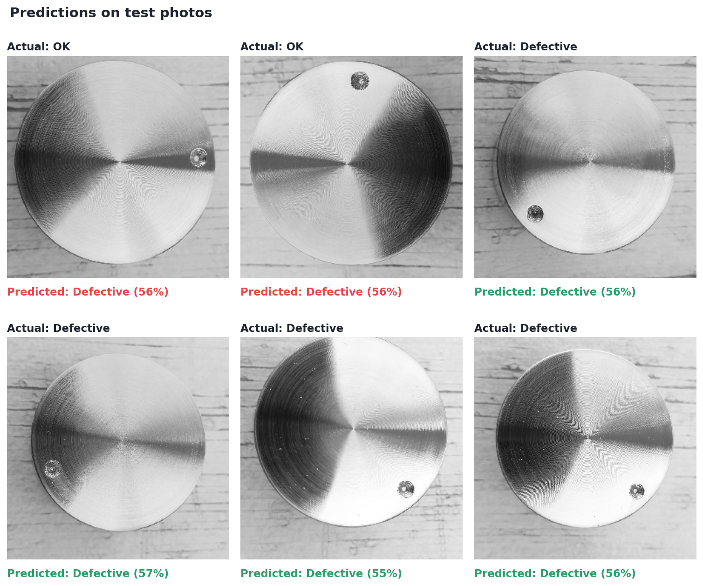
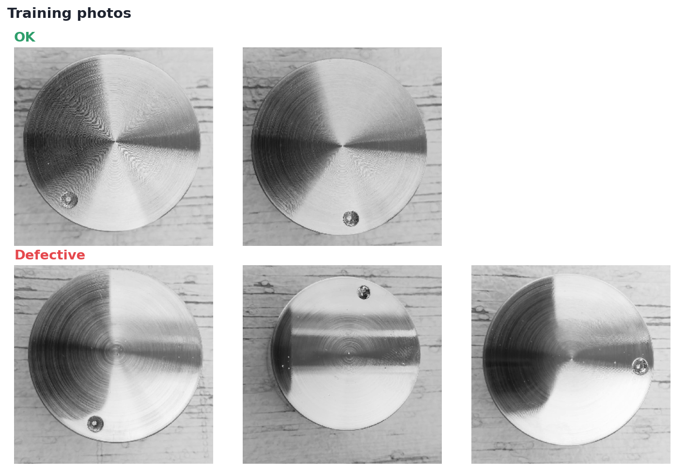
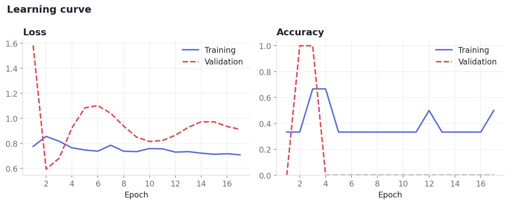
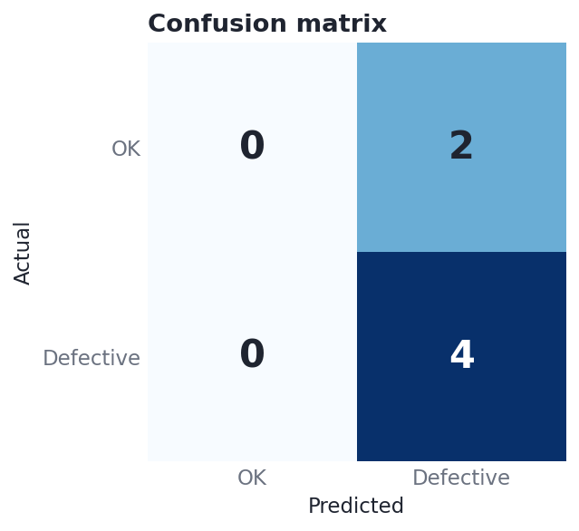
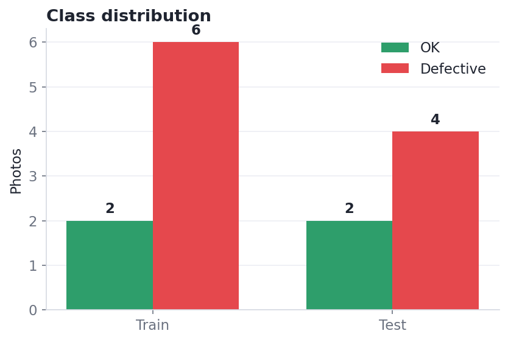
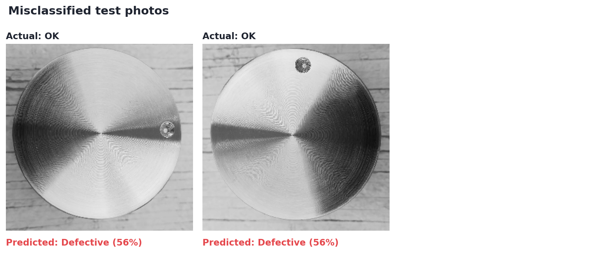

Train a small neural network on photos of good and bad parts, then let it check new photos.

You need Python 3.9 or newer and a terminal opened in the project folder. Packages are installed into a virtual environment inside the project.
python3 -m venv .venv
.venv/bin/pip install -r requirements.txt
Create this folder layout, either inside Data/ or anywhere else (then use --data):
Data/
train/
ok_front/ good parts
def_front/ parts with a dot or a scratch
test/
ok_front/
def_front/
| Rule | Why |
|---|---|
| Same camera, distance and light for all photos | This matters more than the number of photos. |
| At least about 100 photos per class | The 14 sample photos only show the layout. |
| Test photos are different shots from the training photos | Otherwise the test result is too good to be true. |
| Roughly as many good as bad photos | The rarer class is weighted higher, but real examples are better. |

.venv/bin/python main.py train
The program checks the folders first and tells you what is missing. Then it trains, keeps the best epoch, prints the scores on the test photos and writes six figures to Docs/Images.



| Score | Question it answers |
|---|---|
| Accuracy | How many of all test photos were right? |
| Precision | Of the photos called defective, how many really were? |
| Recall | Of the defective photos, how many were found? |
| F1 | One number that balances precision and recall. |
.venv/bin/python main.py predict photo.jpg .venv/bin/python main.py predict folder_with_photos
Each photo gets a label and the confidence of the model (example output with made-up file names):
part_001.jpg OK 93.4% part_002.jpg Defective 87.1%
With --threshold 0.7 a photo only counts as defective when the model is at least 70 % sure. Lower it to catch more defects at the price of more false alarms.

--epochs 100. Training stops early when the validation loss stops improving, so extra epochs are cheap.misclassified.png after every run. It usually shows what the model is confused by: a shadow, a reflection, a different angle.| Message | What to do |
|---|---|
Missing folder: ... | Create the folder named in the message and put photos in it. |
Need at least two training photos in each class | Add photos. One photo per class cannot be split into training and validation. |
No trained model at ... | Run main.py train first. |
No such file or folder: ... | Check the path you gave to predict. |